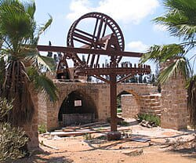
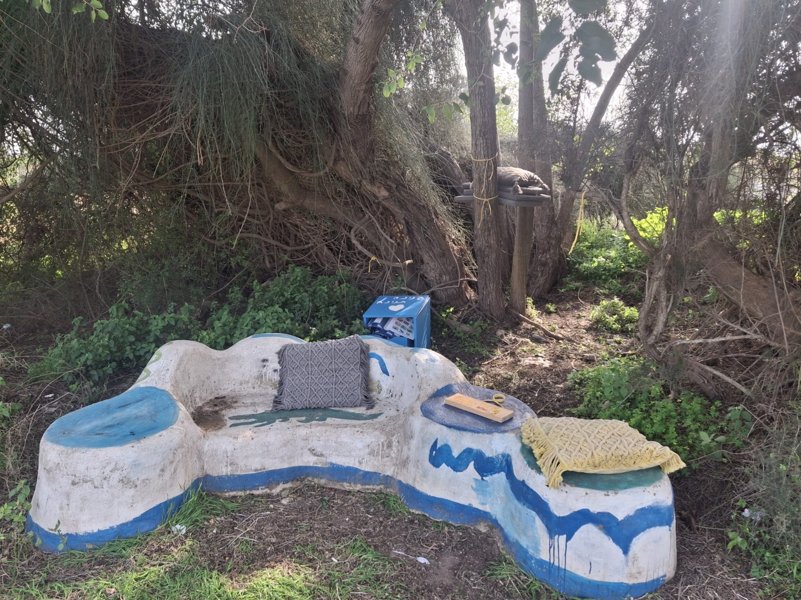
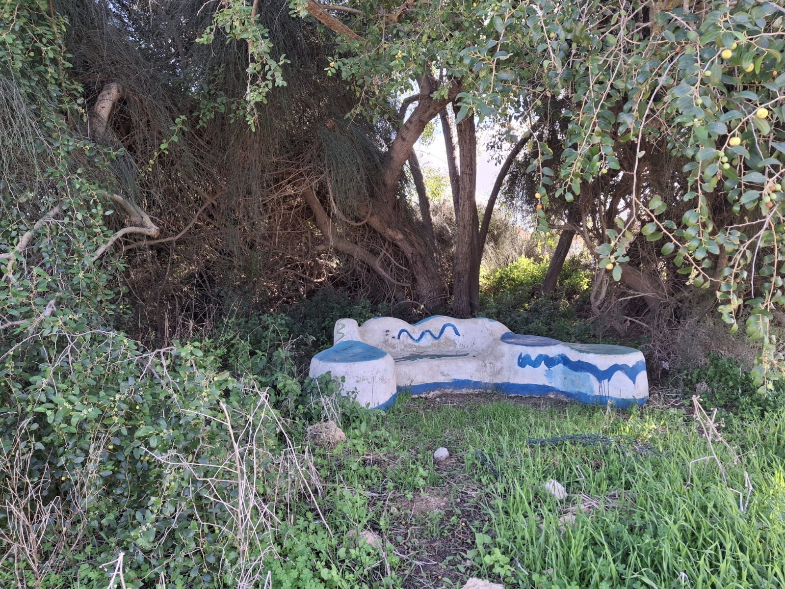
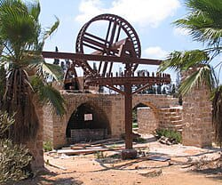
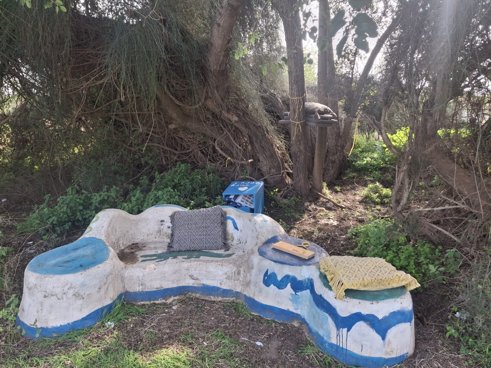
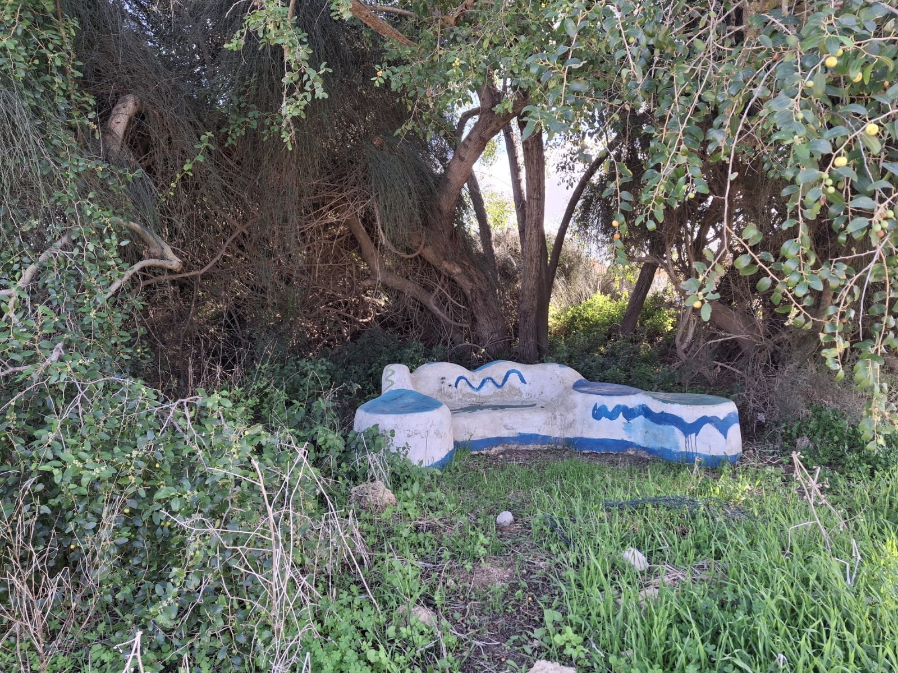
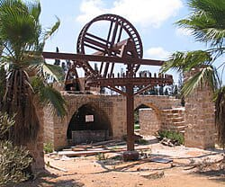
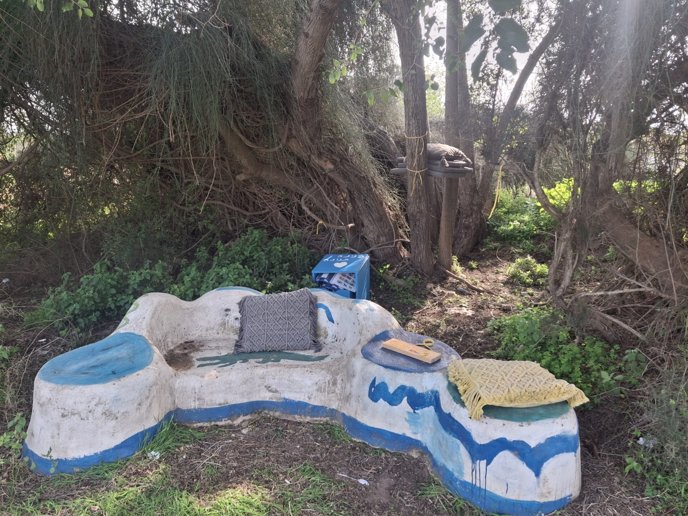
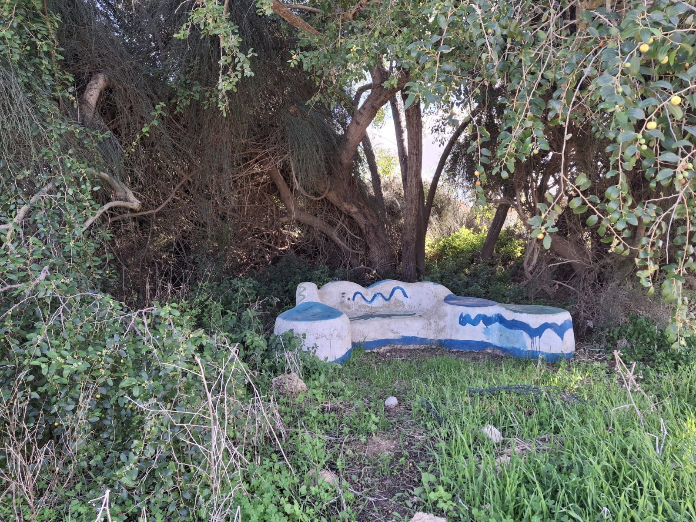

טיפוח אתרים בבנימינה הוא פרויקט ייחודי לשימור והעצמת אתרים בעיר בבנימינה, עם דגש על שיתוף קהילתי והיסטורי.



אמת המים הבלתי גמורה בבנימינה – גבעת עדה: עדות להנדסה רומית מתקדמת אמת המים הבלתי גמורה, הנמצאת באזור נחל תנינים, היא אחד מהאתרים המרתקים והמיוחדים ביותר בהנדסה רומית באזור. מערכת המים נחשפה לראשונה בשנת 1950 על ידי ד"ר המבורגר, רופא המושבה וארכיאולוג חובב, ומהווה עדות לרמה הגבוהה של המיומנות הרומית בתכנון תשתיות. ההיסטוריה של אמת המים אמת המים נועדה להוביל מים ממרחקים כדי לשרת את האוכלוסייה באזור קיסריה. הרומאים ניסו לשנות את תוואי האמה כדי להימנע ממעבר דרך ביצות הכבארה, ובכך להבטיח את זרימת המים באופן רציף לעיר קיסריה, שהייתה אחת הערים המרכזיות בתקופה הרומית. אורך האמה כ-200 מטרים. התוואי לא הושלם, ולפי הערכות, ייתכן שעקב קשיים טכניים או כלכליים לא הצליחו הרומאים להשלימה, ומאז נשארה לא גמורה. המצב כיום היום, אמת המים הבלתי גמורה בבנימינה מהווה אתר ארכיאולוגי מעניין, שבו ניתן להתרשם מההנדסה הרומית. האמה, הבנוייה מאבן, כוללת שיפוע מחוכם וארכיטקטורה מרשימה, שיכולה להמחיש את השאיפה של הרומאים לניצול מקסימלי של משאבי המים. החשיבות ההיסטורית של האתר האתר מהווה עדות לא רק להישג ההנדסי של הרומאים, אלא גם לחשיבות הרבה שהייתה לתשתיות מים בעידן הרומי. השאיפה לשלוט בזרימת המים ולמנוע בעיות של הצפות או חוסרים הייתה אבן יסוד בתכנון ערים מתקדם, במיוחד בערים גדולות כמו קיסריה. הפוטנציאל התיירותי והחינוכי האתר נמצא בסמוך לאתרים תיירותיים נוספים באזור, ויש בו פוטנציאל לפיתוח תיירותי ולחינוך הציבור בנושא ההיסטוריה וההנדסה הרומית. .
פינת חמד שנבנתה ע"י תלמידי אמירים לפני 8 שנים. בשיעורי סביבה יחד עם המחנכות ואבא מתנדב הם חיפשו מקום שיהיה מעין פינה בה אפשר לנוח בזמן סיור, ללמוד בשטח על הצמחים בשדה הבור, ולהינות מהנוף. היום זוהי פינה לרווחת התושבים אפשר לנוח טיולי רגליים ולאופניים . היא בנוייה כספסל בין העצים , פינת צל. בנוייה מצמיגים ישנים שעליהם יצקו בטון ובסוף צבעו בצבעים שונים. לאחר שנים הצבע קצת התקלף והאזור זקוק לטיפוח והחזקה שוטפת. חשוב גם לשדרג את המקום ואולי להוסיף ספסל נוסף שיספיק לכיתה שלמה. חשוב לטפח ולתחזק על מנת שיהיה נעים לשעות ולנוח ואפילו לעצור לארוחה קלה ולהנות מהנוף
הבאר האנטילית הבאר האנטילית היא באר משוחזרת מתקופת השלטון העות'מאני, הכוללת מנגנון שאיבה פעיל ובריכת אגירה מוגבהת מאבן. האתר ממוקם ליד גן חוות זרעוניה והחאן ההיסטורי, ומהווה מוקד עניין לחובבי היסטוריה, חקלאות ומורשת מקומית. בכניסה לאתר ניצבים שני גלגלי ברזל גדולים, המחוברים למנגנון השאיבה העתיק של הבאר, אשר שוכנת בתוך מבנה אבן מסורג. בעבר שימשה הבאר להשקיית שדות דרך מערכת תעלות, באמצעות אנטילים – כלי קיבול שאספו מים מהבאר והעבירו אותם לבריכת האגירה הצמודה. בתחילת המאה ה-20 שימשה הבאר גם לצרכים ביתיים של מתיישבי חאן זרעוניה. עם רכישת האזור על ידי יק"א, נערך במקום שיפוץ משמעותי: הותקן מנוע דיזל, ונפרסה מערכת צינורות מתכת שהובילה מים לחווה החקלאית הניסיונית שפעלה בסביבה. בשנות ה-30 של המאה ה-20, לאחר פירוק החווה, רכש האגרונום ד"ר גוסטב רייך את השטח, כולל הבאר והפרדס הצמוד לה. כאשר הבאר התייבשה בעקבות קידוחים נוספים באזור, הוזרמו מים לבריכה מבארות סמוכות, ומשם הועברו לתעלות ההשקיה. כיום, לאחר שחזור שנעשה בשיתוף מועצת בנימינה, המועצה לשימור אתרים ותרומת משפחת מוזס, משמשת הבאר האנטילית ומספרת את סיפור ההתיישבות והחקלאות באזור. .
מיקום:תחנת הקמח טחנת הקמח אבו נור, הנמצאת בסמוך לנחל תנינים בין בנימינה לבית חנניה, היא טחנה עות'מאנית שהוקמה במאה ה-19.האתר נמצא בסמוך לשביל ישראל, מה שמאפשר למטיילים לבקר בו במהלך מסלולי הליכה באזור. דברים שקרו במשך הזמן: הטחנה כללה ארבעה מתקני טחינה שהופעלו באמצעות מים שהוזרמו אליהם ממערכת המים של קיסריה. במהלך השנים, הטחנה עברה מספר בעלויות ושיפוצים, וב-1915 עברה לידי יק"א, אך פסקה לפעול עד 1922. לאחר מכן, היא ננטשה ונהרסה. שרידים של הטחנה: כיום, ניתן למצוא במקום שרידים של הטחנה, כולל אבני ריחיים ומתקני טחינה, המהווים עדות להיסטוריה העשירה של האזור. הקמתה של הטחנה: הוקמה בסוף המאה ה-19, כאשר משפחת אבו נור הקימה את התחנה כדי לספק קמח טרי לאזור שמסביב. התחנה פעלה בעיקר לסחיטת חיטה ושעורה, ובמקביל, משפחת אבו נור פתחה עסק קטן של טחנות קמח. בשנים לאחר מכן, התחנה הפכה לאחד המרכזים החשובים באזור, ובמיוחד באזור הצפון של הארץ, כשהיא תרמה לאספקת קמח באיכות גבוהה. .